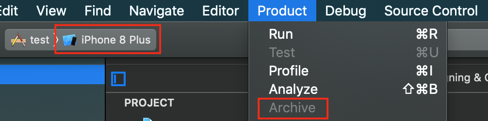
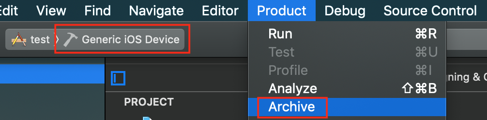

Xcode 11에서 Archive 버튼이 비활성화된 경우
TL;DR
시뮬레이터를 Generic iOS Device로 선택하면, Archive 버튼이 활성화된다.
Archive 버튼이 비활성화된 경우
편의상 실제 기기가 아닌 시뮬레이터를 이용해 개발을 하는 경우가 많을 것이라 생각된다.
그렇게 시뮬레이터를 이용하다가 빌드를 App Store Connect에 업로드 하고 싶을 때,
다음과 같이 Archive 버튼이 비활성화되어 있어 업로드를 할 수 없는 상황에 직면할 때가 있다.

이럴 땐 당황하지 말고, 시뮬레이터 부분을 클릭해 Generic iOS Device로 변경하자.
그러면 Archive 버튼이 예쁘게 활성화되어 있는 것을 볼 수 있다.
